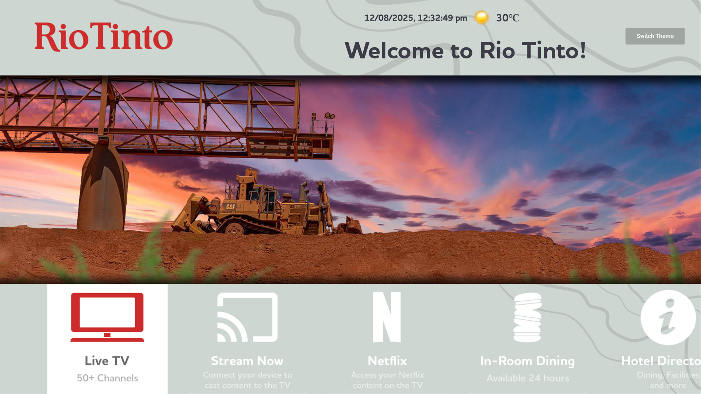

I'm a designer and developer with over two decades of experience creating accessible, functional and attractive user experiences for established and emerging brands.
I'm also the Vice-President of the Australian Computer Museum Society, active in the Sydney games development scene, and a prolific multimedia artist.
YouTube: @AdrianMagni and @australiancomputermuseum
LinkedIn: linkedin.com/in/adrian-magni-4253788
Instagram: theta_sigma_42
Itch.io: amagni.itch.io